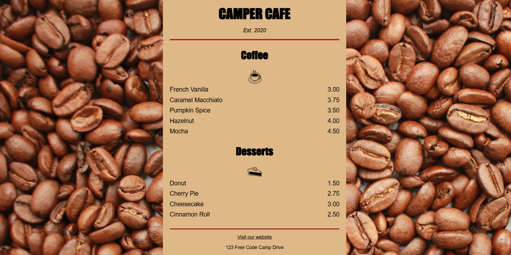
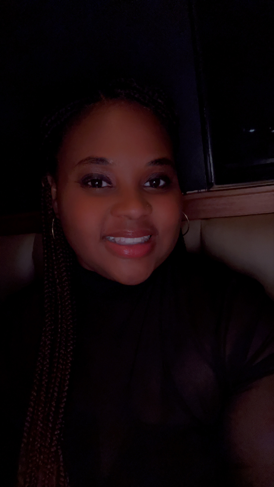
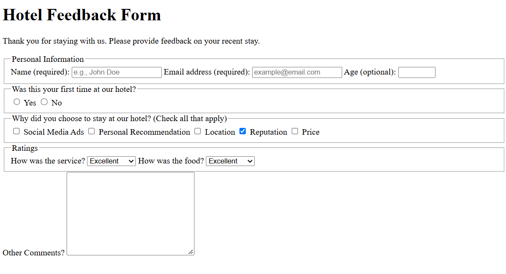
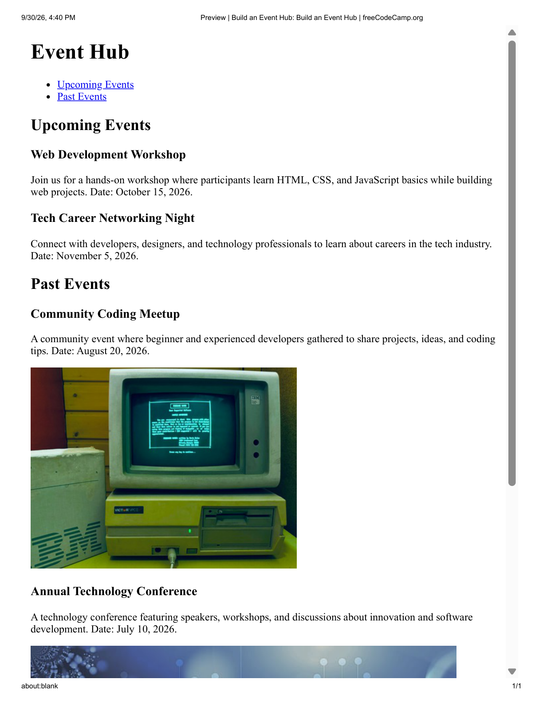
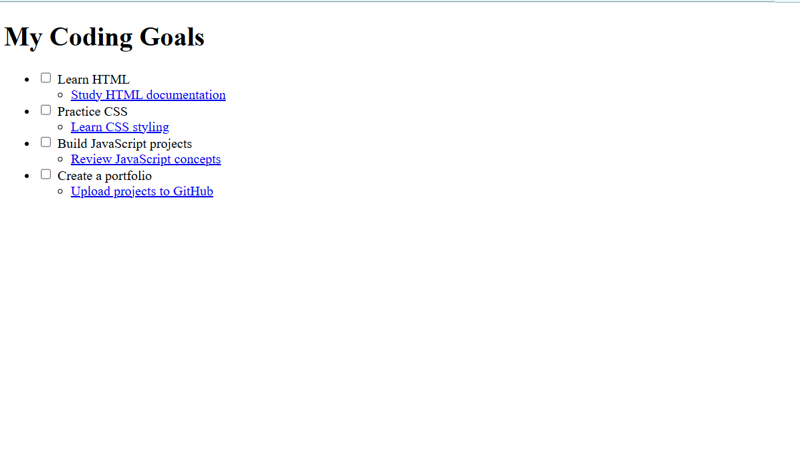
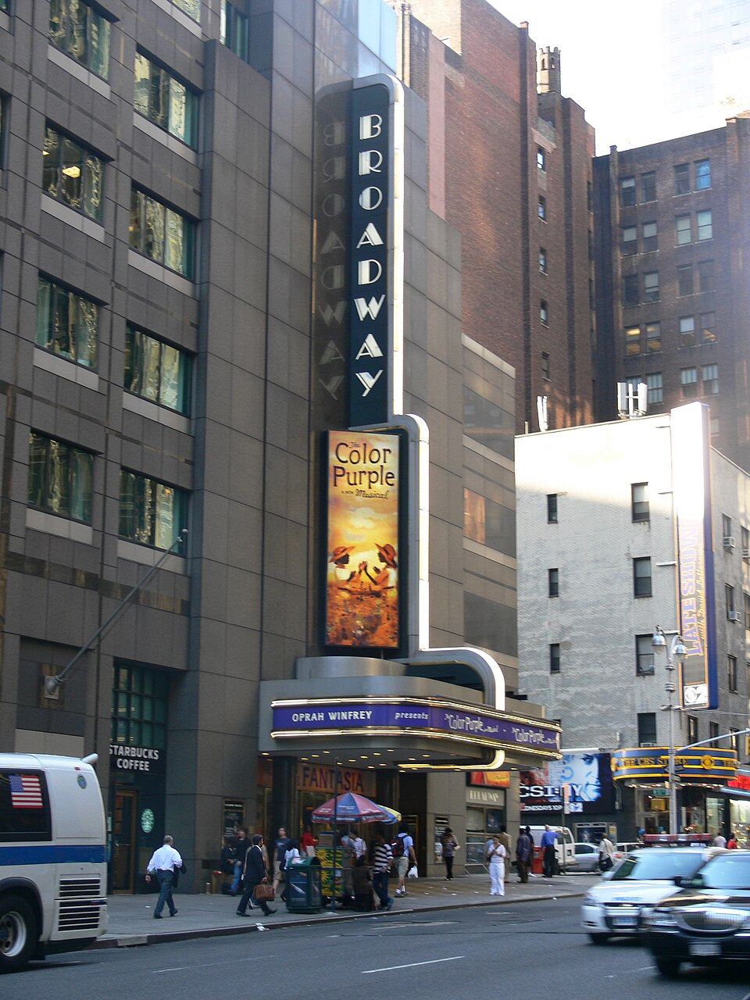

Camper Cafe Menu
Designed a cafe menu webpage using HTML and CSS while practicing styling, colors, fonts, spacing, and page layout.
Hello, I'm
I design learning experiences and am expanding my skills into web development.
Huntsville, Alabama

I am an instructional designer and educator who enjoys creating meaningful learning experiences. Through CodeSquad, I am building my web development skills and exploring how technology and design can work together.
I am especially interested in the intersection of learning, technology, and software development. I enjoy creating digital experiences that are useful, engaging, and accessible.
Here are a few projects I created while learning HTML, CSS, and web development through CodeSquad.

Designed a cafe menu webpage using HTML and CSS while practicing styling, colors, fonts, spacing, and page layout.

Created a feedback form using HTML form elements including text fields, radio buttons, checkboxes, dropdown menus, and a textarea.

Built an event webpage using HTML to organize upcoming and past events, navigation links, and images.

Created a checklist to organize coding goals, learning resources, and web development milestones.
There are several places I would love to visit, but Paris and New York City are at the top of my list for very different reasons.
Paris is a place I would love to visit because I am fascinated by its art and history. I also love the French language and would enjoy being surrounded by it while exploring the city. I would love to experience the museums, architecture, and culture in person.
Photos: Wikimedia Commons. Creative Commons licensed images.

I have been to New York before, but I was very young and do not remember much of the experience. I would love to go back during Christmas to see the tree, lights, and holiday atmosphere. I also love Broadway and would enjoy seeing different shows while I am there.
Photos: Wikimedia Commons. Creative Commons licensed images.
I am interested in careers that allow me to combine my background in learning and education with technology, design, and coding.
Learning Experience Developers combine instructional design, technology, and coding to create interactive digital learning experiences. Their work can include online activities, courses, simulations, assessments, and custom interactions.
I am interested in this career because it combines two areas I already enjoy: instructional design and technology. I can build on my experience creating learning experiences while developing stronger coding skills.
eLearning Developers create and maintain digital learning experiences, including online courses, interactive content, and other digital learning materials.
I am interested in this career because it would allow me to use the instructional design skills I already have while adding more technical development skills. I like having more options for creating interactive learning experiences.
Software Developers design, build, test, and maintain applications and other software. Their work involves writing code, solving problems, testing features, and working with other developers and teams.
I am interested in software development because I want to build my coding skills beyond web pages and learn how applications are created. I also enjoy problem-solving and want to explore how I can combine technology with the experience I already have creating digital products.
Thanks for visiting my portfolio and following along with my web development journey.